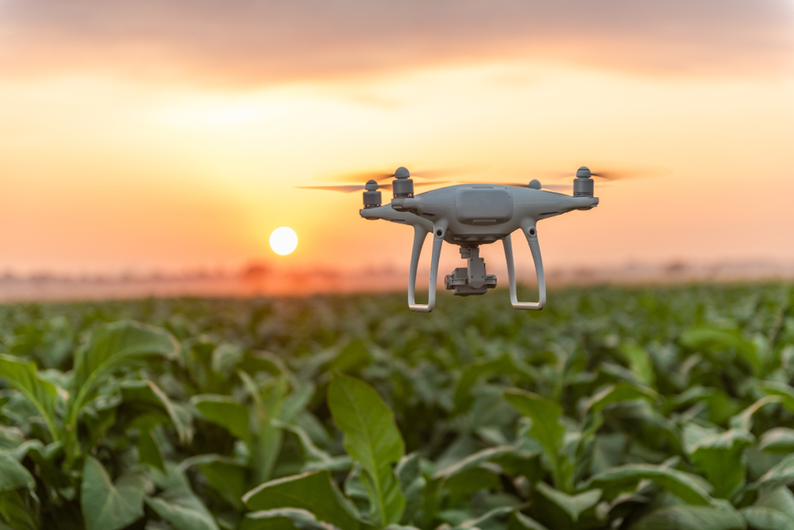

Tecnologia da informação e suas aplicações no agronegócio
A transformação digital já faz parte das rotinas dos produtores rurais. Mudanças consideráveis são observadas nos modelos de negócios e na logística de distribuição e escoamento de produtos. Assim, ganha-se mais produtividade e eficiência no mercado, estimulando uma cultura de inovação, que é um passo interessante quando se pensa em TI no agronegócio. A inovação contínua ainda é um desafio no setor rural, pois existem muitas resistências e dificuldades operacionais. Segundo dados da ABES (Associação Brasileiras das Empresas de Software) o setor de Tecnologia da Informação (TI) cresceu 22,9% em 2020 e operou mais de R$ 200 bilhões; o agronegócio também teve crescimento de 24% em 2020, de acordo com a Confederação Nacional da Agricultura (CNA).
Algumas das tendências tecnológicas que estão ganhando cada vez mais espaço no setor são:
Tudo isso caracteriza o conceito de Smart Farming, que refere-se ao uso de tecnologias avançadas no campo. O objetivo é fazer tudo de forma mais eficiente na fazenda, podendo ser através de informações em tempo real, previsões de dados e a utilização de ferramentas avançadas e inteligentes.
Com as imagens via satélite e os dados de sensores, em conjunto ou separadamente, é possível detectar a degradação nas áreas plantadas ou adjacentes. Normalmente esse tipo de monitoramento tem incentivo da máquina pública do Estado, sendo em níveis variados (municipal, estadual e federal) para que haja conhecimento de áreas que necessitam de maior atenção para que possa haver recuperação da área degradada.
O envolvimento governamental é tanto que existe o projeto federal denominado Agricultura de Baixo Carbono (ABC), que prevê em suas ações, a implantação de integração lavoura-pecuária-floresta (iLPF) como sistema promotor da recuperação de áreas de pastagens degradadas.
A tecnologia da informação dentro da área pecuária se dá principalmente no campo da geotecnologia.
Sendo esse um sistema multimodal, existe a capacidade de auxílio em diversas situações como:
• Na caracterização das áreas de sistemas integrados.
• No monitoramento espaço temporal das alterações.
• No uso e na cobertura das terras.
• Na correlação de parâmetros biofísicos, como índices de área foliar, biomassa e carbono.
A produtividade agrícola terá que aumentar se quisermos proteger nossa oferta de alimentos a longo prazo. A população mundial está crescendo, mas a quantidade de terras agrícolas disponíveis por pessoa está diminuindo. A digitalização na agricultura pode nos ajudar a implantar nossos recursos de forma eficiente e sustentável, permitindo que os agricultores tirem o melhor de seus campos com impacto ambiental mínimo.
{kind=link}
{kind=link}
{kind=link}
{kind=link}
{kind=link}
{kind=link}
{kind=link}